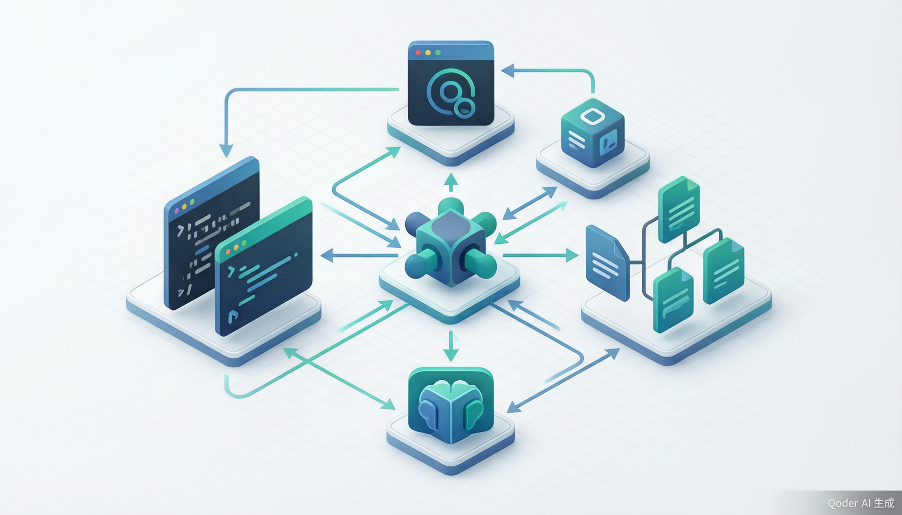
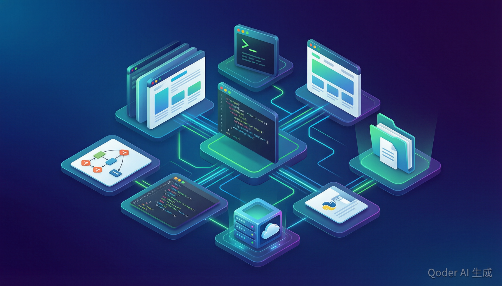
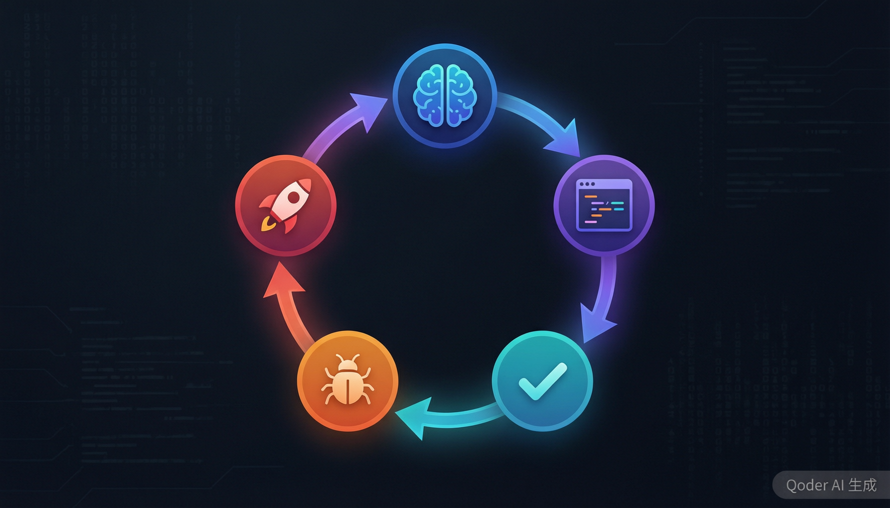

一、引言：AI 编程的新范式
2024 年 3 月，Cognition AI 发布了号称「全球首位 AI 软件工程师」的 Devin，震撼了整个技术社区。然而 Devin 高昂的使用费用和闭源策略让大多数开发者望而却步。就在此时，一个名为 OpenDevin（后更名为 OpenHands）的开源项目应运而生，迅速在 GitHub 上积累了超过 50,000 颗 Star，成为 AI 编程 Agent 领域最受关注的开源项目。
OpenHands 不仅仅是一个"代码补全"工具，而是一个能够自主理解需求、规划方案、编写代码、调试测试、甚至提交 Pull Request 的完整 AI 软件工程 Agent。它运行在安全的 Docker 沙箱中，可以搭配任意 LLM（大语言模型）使用，支持私有化部署，并且核心代码完全开源（MIT 许可证）。
"Build AI agents that write software." —— OpenHands 的使命宣言
本文将从架构设计、核心功能、Agent SDK、安全机制等多个维度，对 OpenHands 进行全面深入的技术解析，帮助你理解这个平台的设计哲学和工程实践。
二、什么是 OpenHands？
OpenHands（曾用名 OpenDevin）是由 All Hands AI 主导开发的开源 AI 驱动软件开发平台。它提供了一个完整的 Software Agent SDK，使开发者能够构建可以自主完成编程任务的 AI Agent。这些 Agent 能够执行人类开发者日常的绝大多数工作：阅读代码、编写功能、修复 Bug、运行测试、浏览 Web、提交代码等。
2.1 项目演进历程
2024 年 3 月 — OpenDevin 诞生
作为对 Cognition AI 发布 Devin 的回应，OpenDevin 项目在社区中发起，目标是构建一个开源的 AI 软件工程师。
2024 年中 — 快速迭代
项目迅速获得大量社区贡献，Agent 能力不断进化，Docker 沙箱、浏览器操控等核心能力陆续集成。
2024 年末 — 更名 OpenHands
项目从 OpenDevin 更名为 OpenHands，定位从单一 Agent 扩展为通用的 AI 软件开发平台。
2025 年 — 产品矩阵成型
形成 SDK + CLI + Local GUI + Cloud + Enterprise 五大产品形态，SWE-Bench 评分达到 77.6%。
2026 年 — 企业级落地
推出企业版（支持 VPC/K8s 自托管），集成 Jira、Slack 等企业工具，MCP 协议支持。
2.2 五大产品形态
OpenHands 针对不同使用场景提供了多种产品形态：
Software Agent SDK
可组合的 Python 库，OpenHands 的核心引擎。支持自定义 Agent、工具和技能，用于构建能编写软件的 AI Agent。
CLI 命令行工具
轻量级命令行界面，可直接在终端中与 Agent 对话，适合自动化脚本和 CI/CD 集成场景。
Local GUI
本地运行的图形界面（Agent Canvas），提供浏览器内的可视化交互体验，适合日常开发使用。
OpenHands Cloud
托管云服务，集成 GitHub/GitLab，支持从 Issue 到 PR 的自动化流程，零配置开箱即用。
Enterprise 企业版
支持 VPC/Kubernetes 自托管部署，提供 Jira、Slack 等企业工具集成，满足合规和安全要求。
三、系统架构深度剖析
OpenHands 的架构设计遵循模块化、安全隔离和可扩展三大原则。下面我们将从整体架构入手，逐层解析其内部运作机制。

OpenHands 系统架构示意图 — Agent 核心通过沙箱与外部环境交互
3.1 核心架构组件
OpenHands 的架构可以分为四个核心层次：
用户交互层（User Interface）
这一层负责接收用户的指令和反馈。无论是通过 CLI、Web GUI（Agent Canvas）、还是 Cloud 界面，用户的自然语言指令都会被解析为 Agent 可以理解的 Task。Cloud 版还支持通过 GitHub App 监听 Issue 和 PR 评论，实现全自动化的代码协作流程。
Agent 推理层（Reasoning-Action Loop）
这是 OpenHands 的"大脑"。Agent 采用经典的 Reasoning-Action Loop（推理-行动循环）架构：首先通过 LLM 分析当前任务上下文和已有信息，然后推理出下一步应采取的行动（Action），执行该行动后观察结果（Observation），再将新的 Observation 送回 LLM 进行下一轮推理。这个过程会持续迭代，直到任务完成或需要用户介入。
工具执行层（Tool Execution）
Agent 的所有外部操作都通过 Tool（工具）完成。OpenHands 内置了丰富的工具集，包括 Bash 命令执行、文件读写操作、浏览器控制、代码编辑器操作等。工具的执行结果会作为 Observation 返回给 Agent，驱动下一轮推理。此外，OpenHands 还支持 MCP（Model Context Protocol）协议，可以动态接入外部工具和服务。
沙箱隔离层（Sandbox Isolation）
所有代码执行和文件操作都在安全的沙箱环境中进行。OpenHands 支持多种沙箱后端：本地 Docker 容器、Apptainer 容器、以及远程沙箱服务。沙箱确保 Agent 的操作不会影响宿主系统，同时提供了可复现的执行环境。
3.2 架构设计 SVG 示意图
3.3 关键技术选型
| 技术层 | 选型 | 说明 |
|---|---|---|
| LLM 接入 | LiteLLM | 统一接口，支持 OpenAI、Azure、AWS Bedrock、Anthropic、本地模型等 100+ 种 LLM |
| 沙箱运行时 | Docker / Apptainer | 提供进程和网络隔离，确保 Agent 操作不影响宿主系统 |
| 浏览器自动化 | Playwright | Agent 可以像人类一样浏览网页、填写表单、截图 |
| 可观测性 | OpenTelemetry | 完整的 trace 记录，支持监控和调试 Agent 行为 |
| 工具扩展 | MCP Protocol | 通过 Model Context Protocol 动态接入外部工具和服务 |
| 对话持久化 | Conversation Store | 支持会话保存和恢复，Agent 可以跨会话记住上下文 |
四、核心功能全景图
OpenHands 提供了一套完整的 AI 编程工具链，覆盖了软件开发全生命周期的各个环节。下面我们逐一解析其核心功能模块。

OpenHands 丰富的工具生态 — 覆盖代码、终端、浏览器、文件系统等
4.1 自主代码编写与修改
OpenHands Agent 能够根据自然语言指令自主编写代码。它不仅能生成新文件，还能理解现有代码库的上下文，进行精确的代码修改。Agent 会：
- 分析项目结构、依赖关系和代码风格
- 根据需求生成符合项目风格的代码
- 自动处理 import 语句和类型定义
- 支持跨文件的联动修改
4.2 智能调试与错误修复
Agent 能够自主运行代码，捕获错误信息，分析 Stack Trace，然后定位并修复 Bug。这个「运行-观察-修复」的循环是自动化的，Agent 会持续迭代直到测试通过或问题解决。
# Agent 的自主调试流程
User: "运行测试并修复失败的用例"
# Step 1: Agent 执行测试命令
Action: bash("pytest tests/ -v")
Observation: "FAILED test_auth.py::test_login - AssertionError"
# Step 2: Agent 分析错误并阅读相关代码
Action: read_file("src/auth.py")
Observation: [文件内容]
# Step 3: Agent 定位问题并修复
Action: edit_file("src/auth.py", line=42, ...)
Observation: "File updated"
# Step 4: Agent 重新运行测试验证
Action: bash("pytest tests/test_auth.py -v")
Observation: "PASSED ✓"
4.3 浏览器自动化
OpenHands 集成了浏览器自动化能力，Agent 可以像人类用户一样操控浏览器。这使得 Agent 能够：
- 浏览文档和 API 参考资料
- 搜索技术方案和最佳实践
- 填写 Web 表单、与 Web 应用交互
- 截图验证前端页面效果
4.4 Git 集成与 PR 自动化
OpenHands 深度集成了 Git 和代码托管平台。Agent 可以自动创建分支、提交代码、推送远程仓库，甚至通过 GitHub/GitLab API 创建 Pull Request。在 Cloud 版本中，还支持监听 Issue 评论并自动修复问题后提交 PR。
4.5 并行工具执行
为了提高效率，OpenHands 支持并行执行多个不相互依赖的工具调用。例如，Agent 可以同时读取多个文件、并行执行多个独立的测试，从而显著缩短任务完成时间。
4.6 Theory of Mind 个性化引导
OpenHands 引入了 "Theory of Mind" 概念，Agent 能够根据用户的技术水平和偏好调整自己的行为方式。对于新手用户，Agent 会提供更多解释和步骤说明；对于资深开发者，Agent 则更加简洁高效地完成任务。
五、Software Agent SDK 详解
Software Agent SDK 是 OpenHands 的核心引擎，也是一个可组合的 Python 库。开发者可以用它来定义自己的 Agent，配置工具和技能，并构建定制化的 AI 编程助手。
5.1 核心概念
SDK 围绕三个核心概念构建：
Agent（智能体）
Agent 是自主执行任务的 AI 实体。它接收任务描述，通过 Reasoning-Action Loop 不断推理和行动，直到任务完成。你可以自定义 Agent 的行为策略。
Tool（工具）
Tool 定义了 Agent 可以执行的操作。每个 Tool 都是一个 Python 函数，带有类型注解和文档字符串。内置工具包括 Bash、文件 I/O、浏览器等。
Skill（技能）
Skill 为 Agent 添加领域知识。例如，你可以添加一个"React 开发"技能，让 Agent 了解 React 的最佳实践和项目结构约定。
5.2 自定义 Tool 示例
在 OpenHands 中定义一个自定义 Tool 非常简洁。以下是一个数据库查询工具的实现示例：
from openhands.sdk import tool, Agent, Task
import sqlite3
# 定义一个自定义工具
@tool
def query_database(sql: str) -> str:
"""执行 SQL 查询并返回结果。
Args:
sql: 要执行的 SQL 查询语句
Returns:
查询结果的字符串表示
"""
conn = sqlite3.connect("project.db")
cursor = conn.execute(sql)
results = cursor.fetchall()
conn.close()
return str(results)
# 创建 Agent 并注册工具
agent = Agent(
tools=[query_database],
model="gpt-4o"
)
# 执行任务
result = agent.run("查询用户表中注册日期在2024年之后的用户数量")
5.3 MCP 协议支持
OpenHands 原生支持 Model Context Protocol (MCP)，这是一种标准化的协议，允许 AI Agent 动态发现和调用外部工具。通过 MCP，OpenHands Agent 可以：
- 接入 Slack、Jira、Notion 等第三方 SaaS 工具
- 调用内部微服务 API
- 访问企业内部知识库
- 与 CI/CD 系统集成
MCP 的优势：通过 MCP 协议，开发者无需修改 Agent 核心代码，即可动态扩展 Agent 的能力边界。只需要实现 MCP Server，Agent 就能自动发现和调用新工具。
六、Agent 工作流程：从规划到交付
理解 OpenHands Agent 的工作流程，有助于我们更好地使用它来完成实际开发任务。Agent 的工作流程遵循一个清晰的「规划—执行—验证—交付」闭环。

OpenHands Agent 的完整工作流程 — 从任务理解到代码交付
6.1 Reasoning-Action Loop 详解
Agent 的核心运行机制是 Reasoning-Action Loop（推理-行动循环）。每一轮循环包含以下步骤：
在感知阶段，Agent 接收用户的任务指令以及当前环境的状态信息（已有的代码、文件结构、之前的执行结果等）。在推理阶段，LLM 分析所有可用信息，生成一个行动计划。在行动阶段，Agent 调用相应的 Tool 执行具体操作。观察阶段收集工具执行的返回结果，然后整个循环不断迭代，直到 Agent 判断任务已完成。
6.2 实际任务执行案例
让我们通过一个具体的例子来观察 Agent 的完整工作流程。假设我们给 Agent 下达了以下任务：
任务："为我们的 Flask API 添加用户注册功能，包含邮箱验证和密码加密"
Agent 的执行过程大致如下：
- 理解需求 — 分析任务描述，识别出需要创建注册 API、邮箱验证逻辑和密码加密三个子任务
- 探索代码库 — 阅读项目结构、现有的路由文件、模型定义和依赖配置
- 设计方案 — 确定使用 bcrypt 进行密码加密，使用 Flask-Mail 发送验证邮件
- 编写代码 — 创建注册路由、用户模型、邮件验证蓝图
- 安装依赖 — 在 requirements.txt 中添加新依赖并执行安装
- 编写测试 — 为注册功能编写单元测试
- 运行验证 — 执行测试，修复发现的问题
- 提交代码 — 创建分支、提交代码、推送远程
整个过程中，Agent 会在「推理-行动」循环中不断迭代，遇到错误会自动修复，最终交付一个可工作的功能实现。
七、安全沙箱机制
安全性是 OpenHands 架构设计中的第一优先级。由于 Agent 需要执行任意代码和操作文件系统，一个完善的隔离机制至关重要。OpenHands 提供了多层安全防护：
7.1 Docker 沙箱（默认）
默认情况下，OpenHands 在 Docker 容器中运行所有 Agent 操作。每个会话都会启动一个独立的容器，具有完全隔离的文件系统和网络环境。这意味着即使 Agent 执行了 rm -rf / 这样的危险命令，也只会影响容器内部，不会波及宿主系统。
# 启动 OpenHands (自动创建 Docker 沙箱)
$ openhands serve
# 指定使用 Docker 沙箱
$ openhands serve --sandbox-type docker
# 自定义 Docker 镜像
$ openhands serve --sandbox-image my-custom-image:latest
7.2 其他沙箱选项
Docker Sandbox
默认的本地沙箱方案，使用 Docker 容器提供完全隔离的执行环境。支持自定义镜像，适合开发和测试场景。
Apptainer Sandbox
面向 HPC 和高性能计算场景的容器方案，提供比 Docker 更强的安全性和资源隔离能力。
Remote Sandbox
云端远程沙箱服务，适合需要弹性扩展或团队协作的场景。由 OpenHands Cloud 托管管理。
7.3 可观测性与审计
OpenHands 集成了 OpenTelemetry，为每次 Agent 执行提供完整的 trace 记录。开发者可以回溯 Agent 的每一步决策和操作，这对于调试和生产环境的安全审计至关重要。所有的 Action 和 Observation 都被记录，形成可追溯的 Agent 行为日志。
八、快速上手指南
OpenHands 提供了多种安装和使用方式，从简单的 CLI 工具到完整的企业部署，满足不同场景的需求。
8.1 环境要求
前置条件：Python 3.12+、Docker（如果使用本地沙箱）、Git。推荐使用 Linux 或 macOS 环境，Windows 用户建议使用 WSL2。
8.2 安装 SDK 和 CLI
# 使用 pip 安装 OpenHands SDK
$ pip install openhands-sdk
# 安装 CLI 工具
$ pip install openhands-cli
# 验证安装
$ openhands --version
8.3 配置 LLM
OpenHands 通过 LiteLLM 支持多种 LLM 提供商。你可以通过环境变量或配置文件设置 API Key：
# OpenAI
$ export LLM_API_KEY="sk-your-openai-key"
$ export LLM_MODEL="gpt-4o"
# Anthropic
$ export LLM_API_KEY="sk-ant-your-anthropic-key"
$ export LLM_MODEL="claude-sonnet-4-20250514"
# Azure OpenAI
$ export LLM_API_KEY="your-azure-key"
$ export LLM_BASE_URL="https://your-resource.openai.azure.com"
$ export LLM_MODEL="azure/gpt-4o"
# 本地模型 (Ollama)
$ export LLM_BASE_URL="http://localhost:11434"
$ export LLM_MODEL="ollama/llama3"
8.4 使用 CLI 与 Agent 对话
# 启动 CLI 交互模式
$ openhands chat
# 直接给出任务
$ openhands run "为项目添加单元测试，覆盖率目标 80%"
# 在特定目录下工作
$ openhands run "重构 auth 模块，使用 JWT 替代 session" --workspace ./my-project
8.5 IDE 集成
OpenHands 还提供了 VS Code 和 JetBrains IDE 的插件，让你在编辑器中直接与 Agent 交互。安装插件后，可以通过命令面板或快捷键调起 Agent，直接在 IDE 内完成代码生成和修改。
8.6 使用 GitHub Actions 自动化
OpenHands Cloud 支持通过 GitHub Actions 实现全自动的代码修复和 PR 提交：
# .github/workflows/openhands.yml
name: OpenHands Auto Fix
on:
issues:
types: [labeled]
jobs:
fix:
if: github.event.label.name == 'ai-fix'
runs-on: ubuntu-latest
steps:
- uses: openhands/auto-fix@v1
with:
token: ${{ secrets.GITHUB_TOKEN }}
openhands-key: ${{ secrets.OPENHANDS_KEY }}
配置完成后，只需给 Issue 打上 ai-fix 标签，OpenHands Agent 就会自动分析问题、编写修复代码并提交 PR。
九、同类产品对比
在 AI 编程 Agent 领域，OpenHands 面临着多个竞争对手。以下是主要产品的对比分析：
| 特性 | OpenHands | Devin (Cognition) | GitHub Copilot Workspace | Cursor / Windsurf |
|---|---|---|---|---|
| 开源 | ✅ MIT | ❌ 闭源 | ❌ 闭源 | ❌ 闭源 |
| LLM 选择 | 任意 LLM (100+) | 专有模型 | GitHub 模型 | 多模型支持 |
| 沙箱隔离 | ✅ Docker/Apptainer | ✅ 云端隔离 | ❌ 无 | ❌ 无 |
| 浏览器自动化 | ✅ Playwright | ✅ 内置 | ❌ 无 | ❌ 无 |
| 私有化部署 | ✅ 支持 | ❌ 不支持 | ❌ 不支持 | ❌ 不支持 |
| SDK 可扩展 | ✅ Python SDK | ❌ 无 | ❌ 有限 | ❌ 无 |
| MCP 协议 | ✅ 原生支持 | ❌ 无 | ❌ 无 | ✅ 部分支持 |
| 价格 | 免费（自带 LLM Key） | $500/月起 | GitHub 订阅 | $20/月起 |
OpenHands 的核心优势：完全开源、LLM 自由度高、可私有化部署、SDK 可扩展性强。这些特点使其成为企业和独立开发者最灵活的选择。
需要注意的是，Cursor 和 Windsurf 更偏向于「AI 辅助编码」工具，而 OpenHands 和 Devin 则是「自主 AI 工程师」。前者适合人类开发者在 IDE 中使用，后者则能独立完成完整的开发任务。
十、生态与社区
OpenHands 的成功很大程度上归功于其活跃的开源社区和丰富的生态系统。
10.1 社区资源
Slack 社区
活跃的开发者社区，可以交流使用经验、报告问题、参与讨论。All Hands AI 团队成员也经常在社区中互动。
GitHub 仓库
完全开源的代码库，欢迎贡献代码、提交 Issue 和参与 Code Review。超过 1000 位社区贡献者。
官方文档
详尽的使用指南、API 参考和最佳实践。文档地址：docs.openhands.dev
10.2 企业集成
OpenHands 企业版提供了丰富的第三方集成能力，可以无缝融入现有的开发和协作工具链：
- 代码托管：GitHub、GitLab — 自动化 PR 流程、Issue 响应
- 项目管理：Jira、Linear — 自动同步任务状态
- 通讯协作：Slack、Teams — Agent 可在频道中汇报进度
- CI/CD：GitHub Actions、Jenkins — 与自动化流水线深度集成
- 监控告警：PagerDuty、Datadog — 响应告警自动排查问题
10.3 SWE-Bench 性能评测
在 SWE-Bench（软件工程基准测试）中，OpenHands 取得了 77.6% 的优异成绩，这是一个衡量 AI 解决真实世界 GitHub Issue 能力的基准。这个分数意味着 OpenHands Agent 能够独立解决接近八成来自真实开源项目的 Bug 和功能请求。
十一、未来展望
OpenHands 正在快速演进，未来有几个值得关注的方向：
11.1 多 Agent 协作
目前的 OpenHands Agent 主要是单 Agent 执行任务。未来有望实现多 Agent 协作模式，例如一个 Agent 负责前端开发，另一个负责后端 API，第三个负责测试，它们可以像真实团队一样协同工作。
11.2 更深度的企业集成
随着企业版的成熟，OpenHands 有望成为企业内部 AI 开发助手的标准选择，深度嵌入到 DevOps 工作流中，从 Issue 管理到代码部署实现全自动化。
11.3 领域特化 Agent
通过 SDK 和 Skill 系统，社区可以构建面向特定领域的 Agent，例如安全审计 Agent、性能优化 Agent、数据库迁移 Agent 等。这将极大扩展 OpenHands 的应用场景。
11.4 对开发者工作方式的影响
OpenHands 这样的 AI Agent 平台不会取代开发者，但会深刻改变开发者的工作方式。未来的开发者可能更多扮演「架构师」和「审查者」的角色——设计系统架构、定义需求、审查 AI 生成的代码，而具体的编码实现工作将越来越多地由 AI Agent 完成。
AI 不会取代程序员，但会使用 AI 的程序员会取代不会使用的。OpenHands 让每个开发者都拥有自己的 AI 开发团队。
总结
OpenHands 代表了 AI 驱动软件开发的一个重要方向：不是简单的代码补全或问答，而是构建能够自主完成开发任务的完整 AI Agent。它的开源特性、灵活的 LLM 支持、安全的沙箱机制和可扩展的 SDK 架构，使其成为目前最值得关注和使用门槛最低的 AI 编程平台之一。
无论你是想要提高个人开发效率的独立开发者，还是希望在团队中引入 AI 辅助开发的企业，OpenHands 都值得一试。你可以从 CLI 工具开始，快速体验 Agent 的能力，然后根据需要逐步深入到 SDK 定制和企业级部署。
相关链接：官方文档 — docs.openhands.dev | GitHub — github.com/All-Hands-AI/OpenHands | Slack 社区 — openhands.dev/slack